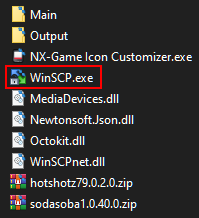

Prerequisites¶
items recommended for this tutorial:
| Nintendo Switch related items: | Type : | Description : |
|---|---|---|
Atmosphere |
Custom Firmware | Custom Firmware |
| Sys-Tweak |
system module / homebrew | Icon Takeover module |
sys-ftpd-light  |
system module / homebrew (included with Deepsea AIO CFW)  |
FTP sysmodule/program on the switch |
NXThemesInstaller  |
nro / homebrew application (Included in some CFW packs) |
Used to install themes |
| Vertical or Horizontal Theme | nxtheme files | theme file that contains image & json patch |
nx-titles-list-dumper  |
nro/homebrew (Pulled with nc-gix) |
imports a list of TitleID installed games into CSV |
| Computer Related Items | ||
|---|---|---|
| NX-GIC |
Icon Transfer tool & Repo Grabber |
|
| winSCP is bundled with NX-GIC |  |